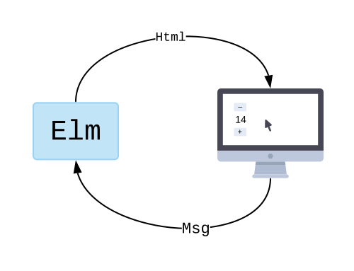

Botones
Nuestro primer ejemplo es un contador, con un número que se puede aumentar o disminuir.
Aquí abajo tienes el programa completo. Si apretas el botón azul “Editar” puedes jugar con el código interactivamente en el editor online. Prueba cambiar el texto de uno de los botones. Dale y apreta el botón azul.
import Browser
import Html exposing (Html, button, div, text)
import Html.Events exposing (onClick)
-- MAIN
main =
Browser.sandbox { init = init, update = update, view = view }
-- MODEL
type alias Model =
Int
init : Model
init =
0
-- UPDATE
type Msg
= Increment
| Decrement
update : Msg -> Model -> Model
update msg model =
case msg of
Increment ->
model + 1
Decrement ->
model - 1
-- VIEW
view : Model -> Html Msg
view model =
div []
[ button [ onClick Decrement ] [ text "-" ]
, div [] [ text (String.fromInt model) ]
, button [ onClick Increment ] [ text "+" ]
]
Ahora que ya has jugado un poco con el código, seguramente tienes algunas preguntas, como: ¿Qué hace el valor main? ¿Cómo calzan todas estas piezas que veo aquí? Discutámoslo parte por parte.
Nota: El código usa anotaciones de tipo, alias de tipo, y tipos personalizados. El punto de esta sección es que te hagas una idea de la Arquitectura Elm, por lo que no vamos a entrar en esos temas hasta después. Pero si estos conceptos te confunden, siéntete libre de adelantarte un poco y quitarte las dudas.
Main
El valor main (“principal”) tiene un significado especial en Elm: describe lo que se mostrará en pantalla. En este caso, estamos diciendo que el valor init inicializará nuestra aplicación, la función view va a mostrar todo en pantalla, y las acciones del usuario irán a parar a la función update. main es como la descripción global de nuestro programa.
main =
Browser.sandbox { init = init, update = update, view = view }
Modelo (Model)
El modelado de datos es extremadamente importante en Elm. El punto del modelo es capturar todos los detalles de tu aplicación en forma de datos.
Para hacer un contador, lo que necesitamos es un número que subirá o bajará. Eso significa que en esta ocasión el modelo es muy simple:
type alias Model =
Int
Sólo necesitamos un valor Int para llevar la cuenta. Podemos también verlo en nuestro valor inicial:
init : Model
init =
0
El valor inicial es cero, y éste subirá o bajará según los botones que apretemos.
Vista (view)
Tenemos un modelo, pero ¿cómo lo mostramos en pantalla? Ese es el rol de la función view:
view : Model -> Html Msg
view model =
div []
[ button [ onClick Decrement ] [ text "-" ]
, div [] [ text (String.fromInt model) ]
, button [ onClick Increment ] [ text "+" ]
]
Esta función recibe Model como un argumento, y retorna HTML. Estamos diciendo que queremos un botón para reducir, la cuenta actual, y un botón para aumentar.
Nótese que tenemos una suscripción al evento onClick en cada botón. Estamos diciendo: cuando alguien haga clic, genera un mensaje. En este caso, el botón “+” está generando un mensaje Increment. ¿Qué es eso, y a dónde va a parar? Veamos la función update.
Actualización (update)
La función update describe cómo nuestro Model cambiará en el tiempo.
Definimos dos mensajes que puede recibir:
type Msg
= Increment
| Decrement
Después, la función update simplemente describe qué se debe hacer cuando se recibe alguno de estos mensajes.
update : Msg -> Model -> Model
update msg model =
case msg of
Increment ->
model + 1
Decrement ->
model - 1
Si recibe un mensaje Increment, sumamos 1 al modelo. Si recibe un mensaje Decrement, restamos 1 al modelo.
Cada vez que se produzca un mensaje, éste pasará por la función update para generar un nuevo modelo. Después, la función view es llamada para saber cómo mostrar este modelo en pantalla. Y esto se seguirá repitiendo indefinidamente. Las acciones del usuario generan un mensaje, actualizamos el modelo con update, lo mostramos en pantalla con view. Etc.
Resumen
Ahora que hemos visto todas las partes de un programa en Elm, tal vez sea más fácil entender cómo se relacionan con el diagrama que vimos antes:

Elm empieza visualizando el valor inicial en pantalla. Después se repiten los siguientes pasos:
- Se espera una acción del usuario.
- Se manda un mensaje a
update. - Se produce un nuevo
Model. - Se llama a
viewpara obtener un nuevo HTML. - Se muestra el nuevo HTML en pantalla.
- Y repetimos.
Esta es la esencia de la Arquitectura Elm. Todos los ejemplos que veamos de aquí en adelante serán sólo leves variaciones de este patrón fundamental.
Ejercicio: Añade un botón que reinicie el contador en cero:
- Añade una variante
Reseten el tipoMsg.- Añade una rama de ejecución
Reseten la funciónupdate.- Añade un botón en la función
view.Puedes editar el ejemplo en el editor online aquí.
Si te va bien con eso, intenta añadir otro botón que incremente en intervalos de a 10.